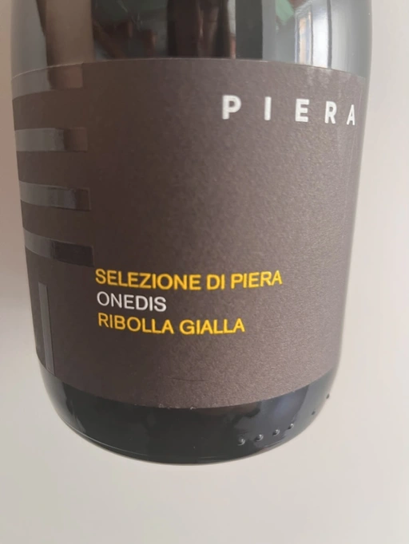

- Type
- White Sparkling, Brut
- Producer
- Piera Martellozzo
- Vintage
- NV
- Location
- Italy, Vino (IT)
- Grapes
- Ribolla Gialla
- Alcohol
- 12
- Sugar
- NA
- Price
- 679 UAH, 704 UAH
- Cellar
- N/A
Ratings
2022-08-17 - 7.25
Ribolla Gialla, long Charmat Method (9 months on lees). It sounds like something I had to try. Prevalent yeasty notes, apple, flowers and grapefruit. Tasty, well balanced, the aftertaste is long. Actually, it’s a friendly and approachable sparkling, not the least because of its higher RS level.